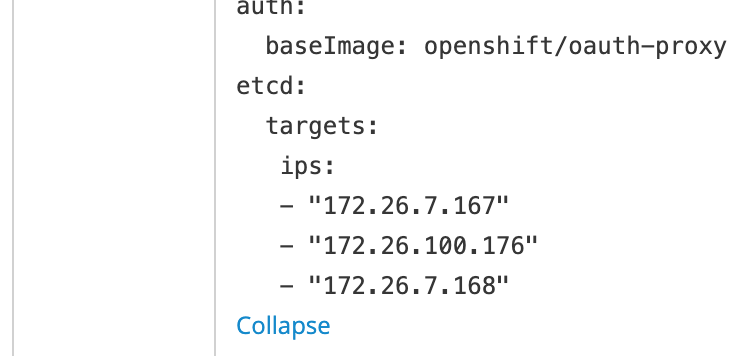
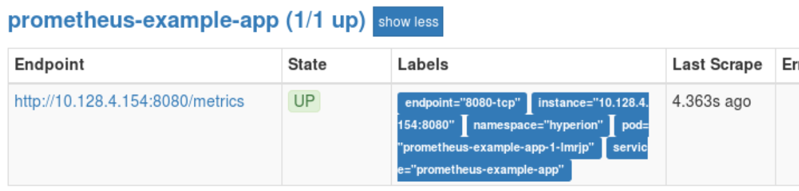

监控模块¶
Openshift v3.11 集群监控以operator的形式把prometheus, grafana, alertmanager集中管理起来. 然而,当cluster monitor operator作为最高管理者,只开放了部分api对象修改, 这就造成了二次定制开发的巨大限制. 比如我要为grafana增加volumeClaim, 直接修改deployment spec是不行的, 因为operator侦测到对象变化, 硬是又给你再改回来. 而operator层面没有把这个对象参数化, 并不提供修改的渠道. 实在是 …
promethues只能使用storageClass作为存储对象接口, 为了支持方便的NFS, 这里需要进行一些改造. 另外grafana 暂时也只能使用empty dir作为存储, 它的插件更新无法持久化.
 Openshift cluster monitoring 架构
Openshift cluster monitoring 架构
安装步骤¶
- 配置NFS Server （node02-inner）
# vi /etc/exports
/diskb/export/prometheus-001 172.26.7.0/8(rw,sync,all_squash)
/diskb/export/prometheus-002 172.26.7.0/8(rw,sync,all_squash)
/diskb/export/alertmanager-001 172.26.7.0/8(rw,sync,all_squash)
/diskb/export/alertmanager-002 172.26.7.0/8(rw,sync,all_squash)
/diskb/export/alertmanager-003 172.26.7.0/8(rw,sync,all_squash)
/diskb/export/grafana-001 172.26.7.0/8(rw,sync,all_squash)
# systemct restart nfs
# iptables -A OS_FIREWALL_ALLOW -p tcp -m state --state NEW -m tcp --dport 2049 -j ACCEPT
- 为monitor节点打上label
# oc label node node01-inner region/monitor=true
# oc label node node02-inner region/monitor=true
- 修改ansible hosts文件, 增加相关配置选项. 这里定义了storage_class_name是不存在的, 目的是为了后继修改方便.
# vi /etc/ansible/hosts
# 安装Prometheus operator
#
# Cluster monitoring is enabled by default, disable it by setting
openshift_cluster_monitoring_operator_install=true
#
# Cluster monitoring configuration variables allow setting the amount of
# storage and storageclass requested through PersistentVolumeClaims.
#
openshift_cluster_monitoring_operator_prometheus_storage_enabled=true
openshift_cluster_monitoring_operator_alertmanager_storage_enabled=true
openshift_cluster_monitoring_operator_prometheus_storage_capacity="2Gi"
openshift_cluster_monitoring_operator_alertmanager_storage_capacity="1Gi"
openshift_cluster_monitoring_operator_node_selector={'region/monitor':'true'}
# external NFS support refer to Using Storage Classes for Existing Legacy Storage
openshift_cluster_monitoring_operator_prometheus_storage_class_name="nfs"
openshift_cluster_monitoring_operator_alertmanager_storage_class_name="nfs"
- 修改以下playbook operator config template文件, 这是让prometheus使用NFS的一个hack
# vi roles/openshift_cluster_monitoring_operator/templates/cluster-monitoring-operator-config.j2
Line 28
{% if openshift_cluster_monitoring_operator_prometheus_storage_enabled | bool %}
volumeClaimTemplate:
spec:
selector:
matchLabels:
volume/type: pv-prometheus
resources:
requests:
storage: {{ openshift_cluster_monitoring_operator_prometheus_storage_capacity }}
{% endif %}
Line 46
{% if openshift_cluster_monitoring_operator_alertmanager_storage_enabled | bool %}
volumeClaimTemplate:
spec:
selector:
matchLabels:
volume/type: pv-alertmanager
resources:
requests:
storage: {{ openshift_cluster_monitoring_operator_alertmanager_storage_capacity }}
{% endif %}
- 创建alertmanager, promethues, grafana pv/pvc
# oc create -f prometheus-pv-nfs-001.yml
# oc create -f prometheus-pv-nfs-002.yml
# oc create -f grafana-pv-pvc-nfs.yml
- 执行安装
# ansible-playbook playbooks/openshift-monitoring/config.yml
- 访问promehteus 入口页面 https://grafana-openshift-monitoring.apps.openshift.net.cn
配置etcd监控目标¶
不管etcd是安装在哪里, 配置要做的事情是在prometheus 配置里增加scrape target, 把etcd client证书挂载进prometheus, 让prometheus可读取.
但是在operator的框架下, 只开放很少一部分的可配置功能, etcd监控就是其中之一. 本来简单的改scrape taget的事情, 需要修改clustr monitor config, 由cluster operator去增加etcd ServiceMonitor对象, 同步到secret/prometheus-k8s, promethues pod 内部的prometheus-config-reloader检测到文件变化,再生成真正的配置给prometheus.
配置同步链条太长, 大大增加了定制化的困难, 减低配置的灵活度.
- 修改ConfigMap cluster-monitoring-config, 增加etcd监控target ip地址
配置etcd ip
- 创建包含etcd client证书的文件 etcd-cert-secret.yaml
# cat <<-EOF > etcd-cert-secret.yaml
apiVersion: v1
data:
etcd-client-ca.crt: "$(cat /etc/origin/master/master.etcd-ca.crt | base64 --wrap=0)"
etcd-client.crt: "$(cat /etc/origin/master/master.etcd-client.crt | base64 --wrap=0)"
etcd-client.key: "$(cat /etc/origin/master/master.etcd-client.key | base64 --wrap=0)"
kind: Secret
metadata:
name: kube-etcd-client-certs
namespace: openshift-monitoring
type: Opaque
EOF
- 创建新的secret对象
# oc apply -f etcd-cert-secret.yaml
- 理论上新增scrape taget后, prometheus会帮你重启生效配置. 如果不生效,则手动重启.
# oc scale statefulset prometheus-k8s --replicas=0
# oc scale statefulset prometheus-k8s --replicas=2
 监控etcd成功
监控etcd成功
配置监控第三方应用的例子¶
以下步骤演示如何监控一个go语言应用, 开放监控端口为8080, 路径为/metrics. 代码参考openshift cluster mornitoring的仓库.
- 部署应用模板
# oc create -f prometheus-example-app-template.yml -n hyperion
- 注入环境变量,使用模板创建应用,服务,路由
# oc process prometheus-example-app-template -p ENV=test |oc create -f -
# oc get dc
NAME REVISION DESIRED CURRENT TRIGGERED BY
prometheus-example-app 1 1 1 config
# oc get svc
NAME TYPE CLUSTER-IP EXTERNAL-IP PORT(S) AGE
prometheus-example-app ClusterIP 172.30.8.240 <none> 8080/TCP 19m
- 修改应用所在的namespace label, 允许被监控
# oc patch namespace hyperion -p '{"metadata": {"labels": {"openshift.io/cluster-monitoring": "true"}}}'
- 为prometheus-k8s sa增加允许访问项目内对象（主要是为了service）的权限
# oc adm policy add-role-to-user view system:serviceaccount:openshift-monitoring:prometheus-k8s -n hyperion
- 为应用创建ServiceMonitor对象. 注意: endpoints下的port值与对应service下的port name一致
# oc create -f sericemonitor-prometheus-example-app.yml -n openshift-monitoring
- 配置成功后, 可以看到应用的监控配置与目标对象
 监控配置成功
监控配置成功
监控对象